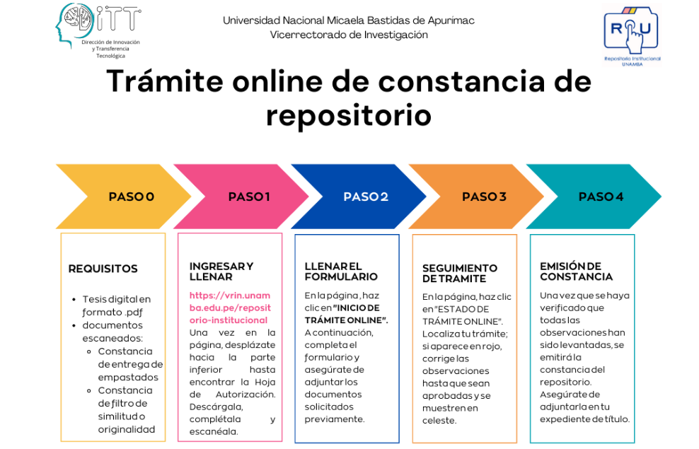
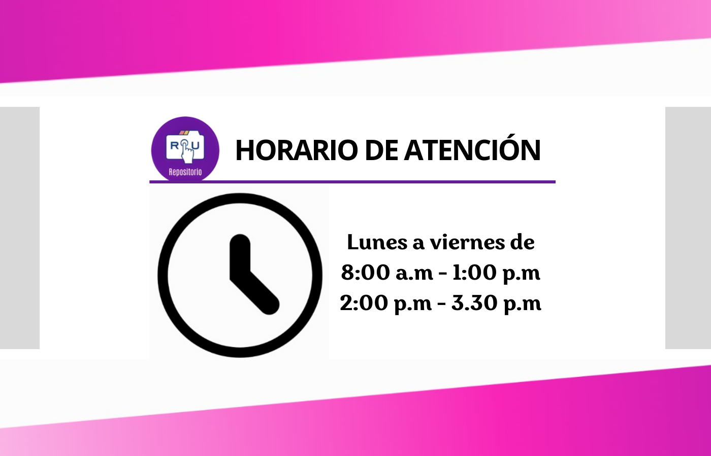
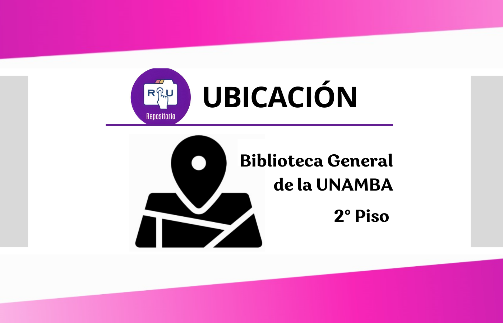
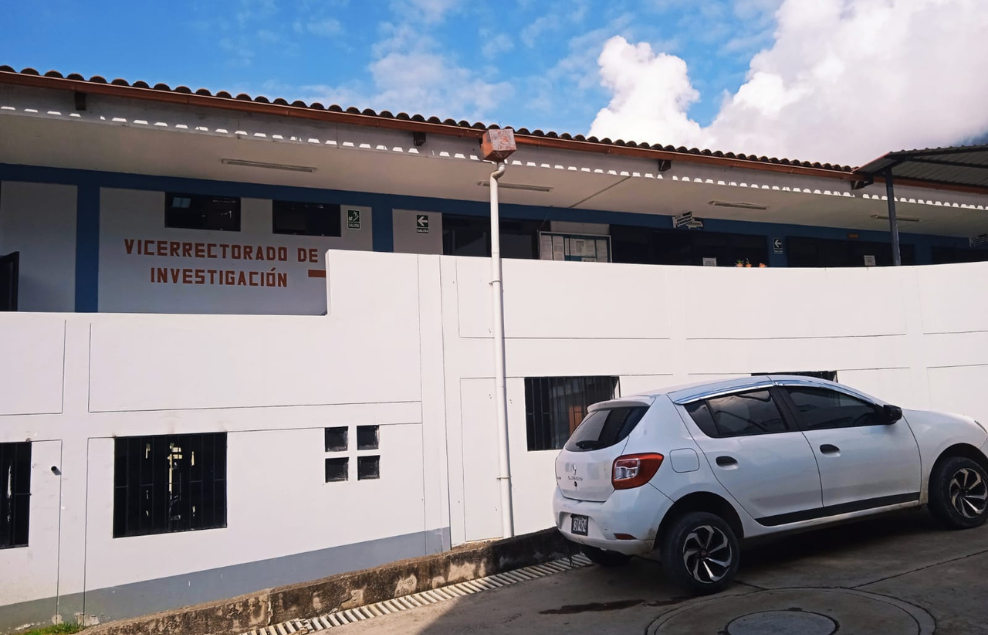
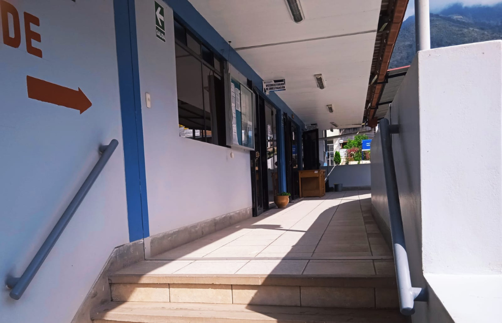
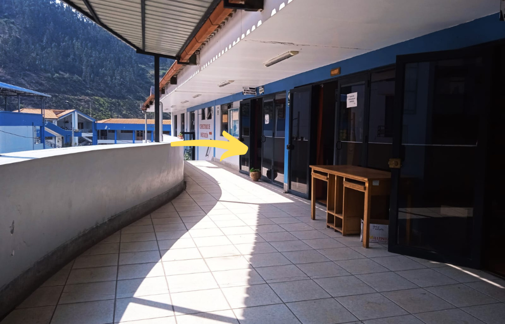

Toggle navigation
QUIÉNES SOMOS
Direcciones
Incubadora de Empresas
Innovación y Transferencia Tecnológica
Producción de Bienes y Servicios
Institutos de Investigación
Eventos
INVESTIGACIÓN
Docentes RENACYT
Lista de Docentes Investigadores
Alumnos Investigadores
Líneas de Investigación
Unidades de Investigación
REGLAMENTOS
NOTICIAS
REPOSITORIO
OBSERVATORIO
Iniciar Trámite Online
POR FAVOR LEER LOS REQUISITOS
LA GENERACIÓN DE CONSTANCIAS REQUIERE 5 DÍAS HÁBILES
Inicio de Trámite Online
Estado de Trámite Online
Líneas de investigación






keyboard_arrow_left
Previous
keyboard_arrow_right
Next
Documentos para la redacción de Proyectos e Informes
Directivas y
Errores Comunes
Formato de
Proyectos
Formatos de
Informes
Guias, Estilos
de Redacción
Formato de
Posgrado
Hoja de autorización de publicación, descargue, rellene los campos imprima, firme y ponga su huella dactilar
(clic para descargar)
.
Errores recurrentes
(clic para descargar)
.
Ejemplo de tablas y figuras con ISO 690
(clic para descargar)
.
Formato de tablas y figuras para la Escuela Académico Profesional Medicina Veterinaria y Zootecnia
(clic para descargar)
.
Proyecto cuantitativo
(clic para descargar)
.
Proyecto cualitativo
(clic para descargar)
.
Proyecto de Trabajo Profesional
(clic para descargar)
.
Informe final de investigación cuantitativo
(clic para descargar)
.
Informe final de investigación cualitativo
(clic para descargar)
.
Informe final de trabajo profesional
(clic para descargar)
.
ISO 690 para ingenierías
(clic para descargar)
.
APA para Sociales
(clic para descargar)
.
Vancouver , para MVZ
(clic para descargar)
.
Proyecto cuantitativo
(clic para descargar)
.
Proyecto cualitativo
(clic para descargar)
.
Informe cuantitativo
(clic para descargar)
.
Informe cualitativo
(clic para descargar)
.
Contáctanos
Atención
[email protected]
en horario de oficina, toda consulta es vía WhastApp, escanea el código QR desde tu celular o
clic aquí para unirte.
Nota. Todo trámite es virtual.